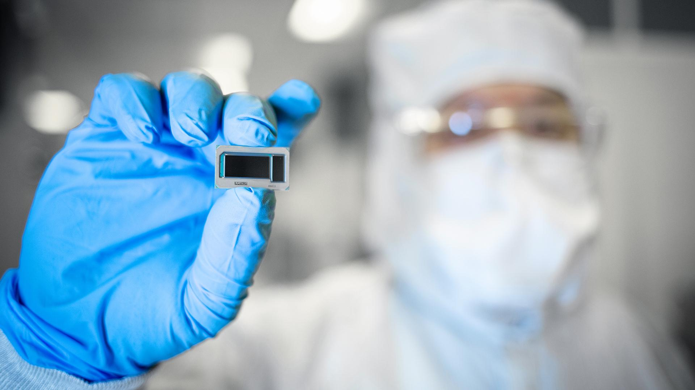
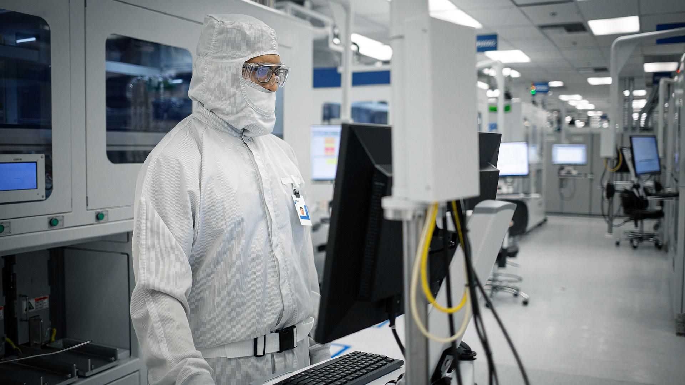
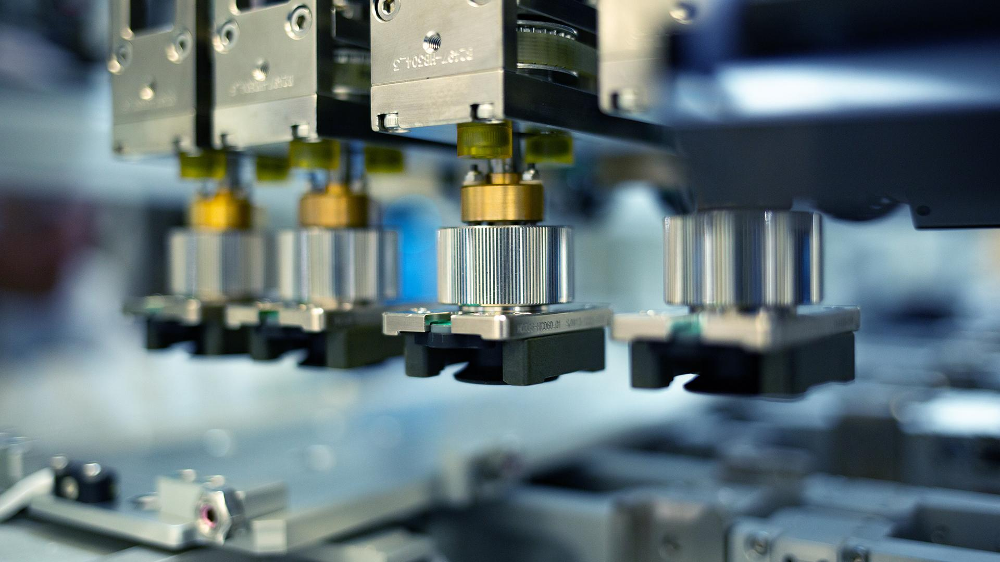
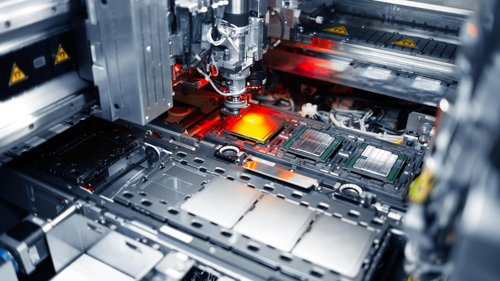
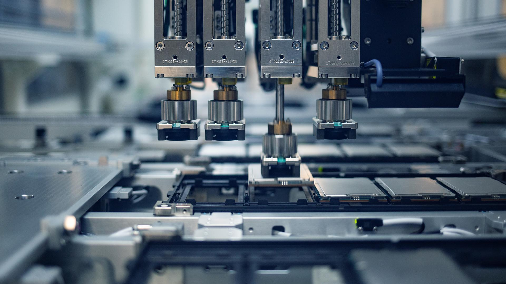
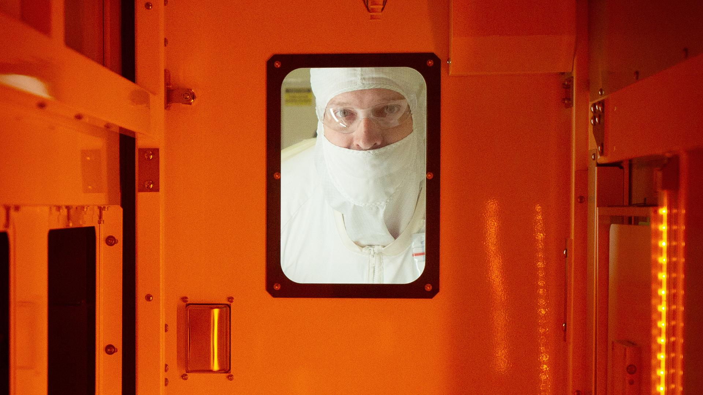
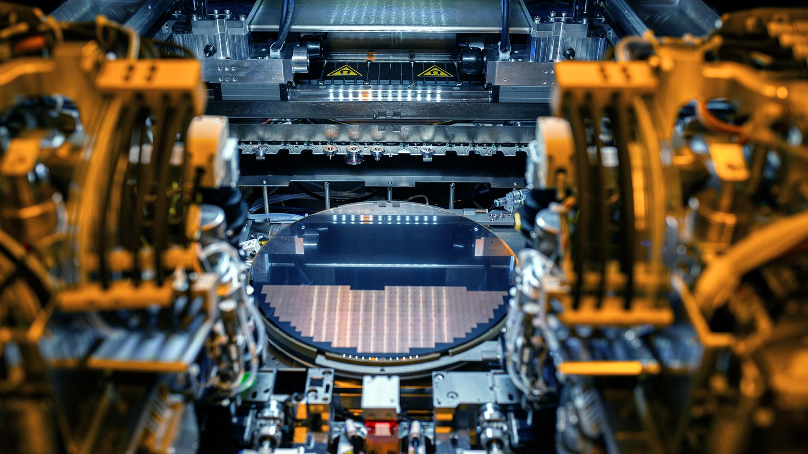
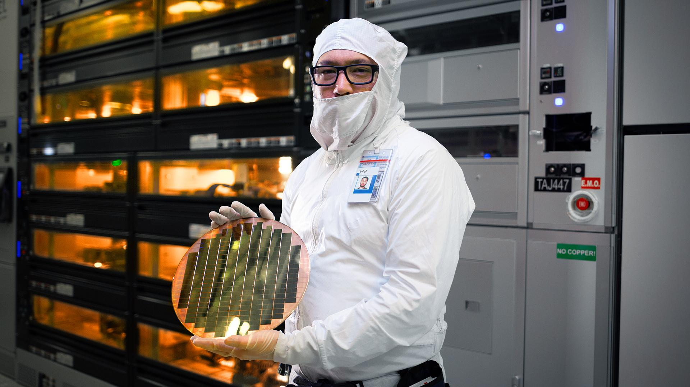
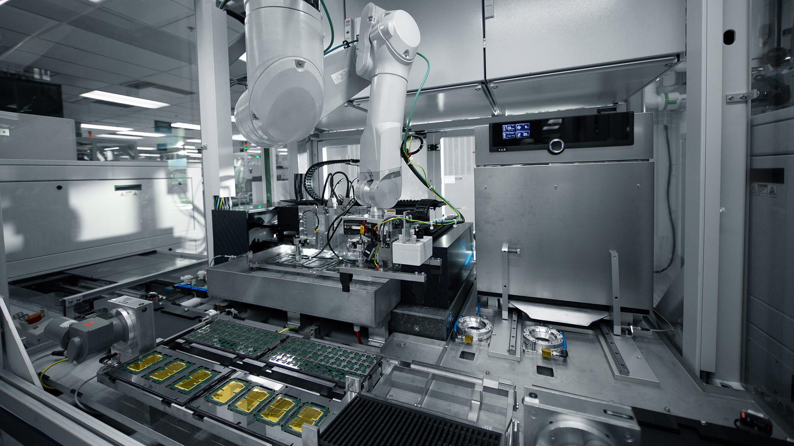
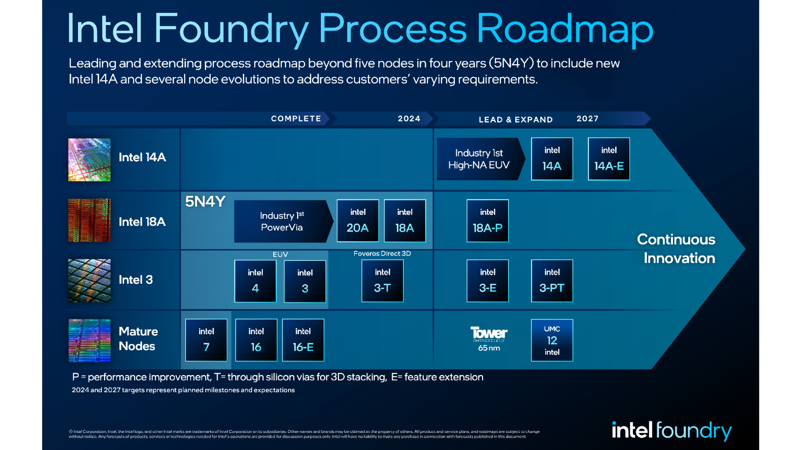

News Highlights:
- Intel Foundry launches as the world’s first systems foundry for the AI era, delivering leadership in technology, resiliency and sustainability.
- Intel Foundry unveils new roadmap featuring Intel 14A process technology, specialized node evolutions and new Intel Foundry Advanced System Assembly and Test (ASAT) capabilities to help customers realize their AI ambitions.
- Intel Foundry announces design win: Microsoft CEO Satya Nadella shares that Microsoft has chosen a chip design it plans to produce on the Intel 18A process.
- Ecosystem partners including Synopsys, Cadence, Siemens and Ansys announce validated tools, design flows and intellectual property (IP) portfolios ready to enable customer designs.
SAN JOSE, Calif., Feb. 21, 2024 – Intel Corp. (INTC) today launched Intel Foundry as a more sustainable systems foundry business designed for the AI era and announced an expanded process roadmap designed to establish leadership into the latter part of this decade. The company also highlighted customer momentum and support from ecosystem partners – including Synopsys, Cadence, Siemens and Ansys – who outlined their readiness to accelerate Intel Foundry customers’ chip designs with tools, design flows and IP portfolios validated for Intel’s advanced packaging and Intel 18A process technologies.
The announcements were made at Intel’s first foundry event, Intel Foundry Direct Connect, where the company gathered customers, ecosystem companies and leaders from across the industry. Among the participants and speakers were U.S. Secretary of Commerce Gina Raimondo, Arm CEO Rene Haas, Microsoft CEO Satya Nadella, OpenAI CEO Sam Altman and others.
More: Intel Foundry Direct Connect (Press Kit)

An intel manufacturing employee displays a test system-on-chip built on a glass substrate at an Intel fab in Chandler, Arizona, in December 2023. In February 2024, Intel Corporation launched Intel Foundry as the world’s first systems foundry for the AI era, delivering leadership in technology, resiliency and sustainability. (Credit: Intel Corporation)
An intel manufacturing employee displays a test system-on-chip built on a glass substrate at an Intel fab in Chandler, Arizona, in December 2023. In February 2024, Intel Corporation launched Intel Foundry as the world’s first systems foundry for the AI era, delivering leadership in technology, resiliency and sustainability. (Credit: Intel Corporation)

Using Intel technology, Eigen Innovations, an AI software company based in New Brunswick, Canada, helps manufacturers produce defect-free goods. Eigen’s OneView AI platform can be used to check manufacturing welds on the factory floor – in one use case, the platform uses thermal imagery to determine a weld’s quality. (Credit: Intel Corporation)
Using Intel technology, Eigen Innovations, an AI software company based in New Brunswick, Canada, helps manufacturers produce defect-free goods. Eigen’s OneView AI platform can be used to check manufacturing welds on the factory floor – in one use case, the platform uses thermal imagery to determine a weld’s quality. (Credit: Intel Corporation)

During recording of the “Intel Unleashed: Engineering the Future” webcast, Intel CEO Pat Gelsinger highlights "Ponte Vecchio," Intel's first exascale graphics processing unit. During the webcast on March 23, 2021, Gelsinger outlines the company’s path forward to manufacture, design and deliver leadership products and create long-term value for stakeholders. (Credit: Walden Kirsch/Intel Corporation)
During recording of the “Intel Unleashed: Engineering the Future” webcast, Intel CEO Pat Gelsinger highlights "Ponte Vecchio," Intel's first exascale graphics processing unit. During the webcast on March 23, 2021, Gelsinger outlines the company’s path forward to manufacture, design and deliver leadership products and create long-term value for stakeholders. (Credit: Walden Kirsch/Intel Corporation)

An intel manufacturing employee displays a test system-on-chip built on a glass substrate at an Intel fab in Chandler, Arizona, in December 2023. In February 2024, Intel Corporation launched Intel Foundry as the world’s first systems foundry for the AI era, delivering leadership in technology, resiliency and sustainability. (Credit: Intel Corporation)
An intel manufacturing employee displays a test system-on-chip built on a glass substrate at an Intel fab in Chandler, Arizona, in December 2023. In February 2024, Intel Corporation launched Intel Foundry as the world’s first systems foundry for the AI era, delivering leadership in technology, resiliency and sustainability. (Credit: Intel Corporation)

An intel manufacturing employee displays a test system-on-chip built on a glass substrate at an Intel fab in Chandler, Arizona, in December 2023. In February 2024, Intel Corporation launched Intel Foundry as the world’s first systems foundry for the AI era, delivering leadership in technology, resiliency and sustainability. (Credit: Intel Corporation)
An intel manufacturing employee displays a test system-on-chip built on a glass substrate at an Intel fab in Chandler, Arizona, in December 2023. In February 2024, Intel Corporation launched Intel Foundry as the world’s first systems foundry for the AI era, delivering leadership in technology, resiliency and sustainability. (Credit: Intel Corporation)

An intel manufacturing employee displays a test system-on-chip built on a glass substrate at an Intel fab in Chandler, Arizona, in December 2023. In February 2024, Intel Corporation launched Intel Foundry as the world’s first systems foundry for the AI era, delivering leadership in technology, resiliency and sustainability. (Credit: Intel Corporation)
An intel manufacturing employee displays a test system-on-chip built on a glass substrate at an Intel fab in Chandler, Arizona, in December 2023. In February 2024, Intel Corporation launched Intel Foundry as the world’s first systems foundry for the AI era, delivering leadership in technology, resiliency and sustainability. (Credit: Intel Corporation)

An intel manufacturing employee displays a test system-on-chip built on a glass substrate at an Intel fab in Chandler, Arizona, in December 2023. In February 2024, Intel Corporation launched Intel Foundry as the world’s first systems foundry for the AI era, delivering leadership in technology, resiliency and sustainability. (Credit: Intel Corporation)
An intel manufacturing employee displays a test system-on-chip built on a glass substrate at an Intel fab in Chandler, Arizona, in December 2023. In February 2024, Intel Corporation launched Intel Foundry as the world’s first systems foundry for the AI era, delivering leadership in technology, resiliency and sustainability. (Credit: Intel Corporation)

An intel manufacturing employee displays a test system-on-chip built on a glass substrate at an Intel fab in Chandler, Arizona, in December 2023. In February 2024, Intel Corporation launched Intel Foundry as the world’s first systems foundry for the AI era, delivering leadership in technology, resiliency and sustainability. (Credit: Intel Corporation)
An intel manufacturing employee displays a test system-on-chip built on a glass substrate at an Intel fab in Chandler, Arizona, in December 2023. In February 2024, Intel Corporation launched Intel Foundry as the world’s first systems foundry for the AI era, delivering leadership in technology, resiliency and sustainability. (Credit: Intel Corporation)

An intel manufacturing employee displays a test system-on-chip built on a glass substrate at an Intel fab in Chandler, Arizona, in December 2023. In February 2024, Intel Corporation launched Intel Foundry as the world’s first systems foundry for the AI era, delivering leadership in technology, resiliency and sustainability. (Credit: Intel Corporation)
An intel manufacturing employee displays a test system-on-chip built on a glass substrate at an Intel fab in Chandler, Arizona, in December 2023. In February 2024, Intel Corporation launched Intel Foundry as the world’s first systems foundry for the AI era, delivering leadership in technology, resiliency and sustainability. (Credit: Intel Corporation)
Download all images (ZIP, 134 MB)
“AI is profoundly transforming the world and how we think about technology and the silicon that powers it,” said Intel CEO Pat Gelsinger. “This is creating an unprecedented opportunity for the world’s most innovative chip designers and for Intel Foundry, the world’s first systems foundry for the AI era. Together, we can create new markets and revolutionize how the world uses technology to improve people’s lives.”
Process Roadmap Expands Beyond 5N4Y
Intel’s extended process technology roadmap adds Intel 14A to the company’s leading-edge node plan, in addition to several specialized node evolutions. Intel also affirmed that its ambitious five-nodes-in-four-years (5N4Y) process roadmap remains on track and will deliver the industry’s first backside power solution. Company leaders expect Intel will regain process leadership with Intel 18A in 2025.
The new roadmap includes evolutions for Intel 3, Intel 18A and Intel 14A process technologies. It includes Intel 3-T, which is optimized with through-silicon vias for 3D advanced packaging designs and will soon reach manufacturing readiness. Also highlighted are mature process nodes, including new 12 nanometer nodes expected through the joint development with UMC announced last month. These evolutions are designed to enable customers to develop and deliver products tailored to their specific needs. Intel Foundry plans a new node every two years and node evolutions along the way, giving customers a path to continuously evolve their offerings on Intel’s leading process technology.
Intel also announced the addition of Intel Foundry FCBGA 2D+ to its comprehensive suite of ASAT offerings, which already include FCBGA 2D, EMIB, Foveros and Foveros Direct.

Download full infographic
Microsoft Design on Intel 18A Headlines Customer Momentum
Customers are supporting Intel’s long-term systems foundry approach. During Pat Gelsinger’s keynote, Microsoft Chairman and CEO Satya Nadella stated that Microsoft has chosen a chip design it plans to produce on the Intel 18A process.
“We are in the midst of a very exciting platform shift that will fundamentally transform productivity for every individual organization and the entire industry,” Nadella said. “To achieve this vision, we need a reliable supply of the most advanced, high-performance and high-quality semiconductors. That’s why we are so excited to work with Intel Foundry, and why we have chosen a chip design that we plan to produce on Intel 18A process.”
Intel Foundry has design wins across foundry process generations, including Intel 18A, Intel 16 and Intel 3, along with significant customer volume on Intel Foundry ASAT capabilities, including advanced packaging.
In total, across wafer and advanced packaging, Intel Foundry’s expected lifetime deal value is greater than $15 billion.
IP and EDA Vendors Declare Readiness for Intel Process and Packaging Designs
Intellectual property and electronic design automation (EDA) partners Synopsys, Cadence, Siemens, Ansys, Lorentz and Keysight disclosed tool qualification and IP readiness to enable foundry customers to accelerate advanced chip designs on Intel 18A, which offers the foundry industry’s first backside power solution. These companies also affirmed EDA and IP enablement across Intel node families.
At the same time, several vendors announced plans to collaborate on assembly technology and design flows for Intel’s embedded multi-die interconnect bridge (EMIB) 2.5D packaging technology. These EDA solutions will ensure faster development and delivery of advanced packaging solutions for foundry customers.
Intel also unveiled an "Emerging Business Initiative" that showcases a collaboration with Arm to provide cutting-edge foundry services for Arm-based system-on-chips (SoCs). This initiative presents an important opportunity for Arm and Intel to support startups in developing Arm-based technology and offering essential IP, manufacturing support and financial assistance to foster innovation and growth.
Systems Approach Differentiates Intel Foundry in the AI Era
Intel’s systems foundry approach offers full-stack optimization from the factory network to software. Intel and its ecosystem empower customers to innovate across the entire system through continuous technology improvements, reference designs and new standards.
Stuart Pann, senior vice president and general manager of Foundry Services at Intel said, “We are offering a world-class foundry, delivered from a resilient, more sustainable and secure source of supply, and complemented by unparalleled systems of chips capabilities. Bringing these strengths together gives customers everything they need to engineer and deliver solutions for the most demanding applications.”
Global, Resilient, More Sustainable and Trusted Systems Foundry
Resilient supply chains must also be increasingly sustainable, and today Intel shared its goal of becoming the industry’s most sustainable foundry. In 2023, preliminary estimates show that Intel used 99% renewable electricity in its factories worldwide. Today, the company redoubled its commitment to achieving 100% renewable electricity worldwide, net-positive water and zero waste to landfills by 2030. Intel also reinforced its commitment to net-zero Scope 1 and Scope 2 GHG emissions by 2040 and net-zero upstream Scope 3 emissions by 2050.
Forward-Looking Statements
This release contains forward-looking statements, including with respect to Intel’s:
- business plans and strategy;
- current and future technologies, including future process nodes and transistor, manufacturing, and packaging technologies;
- process and product roadmaps and schedules (including expected goals, timelines, ramps, progress, availability, and production);
- future product architectures;
- expectations regarding process performance, PPA gains, and other performance metrics;
- expectations regarding product and process leadership;
- plans and goals with respect to our foundry business, including with respect to anticipated customers, expected lifetime deal value, future manufacturing capacity, service, technology and IP offerings, third-party collaborations, ecosystem support and resilience;
- AI strategy and capabilities;
- future social and environmental performance goals, measures, strategies, and results;
- anticipated growth, future market share, and trends in our businesses and operations;
- projected growth and trends in markets relevant to our businesses; and
- other characterizations of future events or circumstances.
Such statements involve many risks and uncertainties that could cause our actual results to differ materially from those expressed or implied, including those associated with:
- the high level of competition and rapid technological change in our industry;
- the significant long-term and inherently risky investments we are making in R&D and manufacturing facilities that may not realize a favorable return;
- the complexities and uncertainties in developing and implementing new semiconductor products and manufacturing process technologies;
- our ability to time and scale our capital investments appropriately and successfully secure favorable alternative financing arrangements and government grants;
- implementing new business strategies and investing in new businesses and technologies;
- changes in demand for our products;
- macroeconomic conditions and geopolitical tensions and conflicts, including geopolitical and trade tensions between the U.S. and China, the impacts of Russia's war on Ukraine, tensions and conflict affecting Israel, and rising tensions between mainland China and Taiwan;
- the evolving market for products with AI capabilities;
- our complex global supply chain, including from disruptions, delays, trade tensions and conflicts, or shortages;
- product defects, errata, and other product issues, particularly as we develop next-generation products and implement next-generation manufacturing process technologies;
- potential security vulnerabilities in our products; increasing and evolving cybersecurity threats and privacy risks;
- IP risks including related litigation and regulatory proceedings;
- the need to attract, retain, and motivate key talent;
- strategic transactions and investments;
- sales-related risks, including customer concentration and the use of distributors and other third parties;
- our significantly reduced return of capital in recent years;
- our debt obligations and our ability to access sources of capital;
- complex and evolving laws and regulations across many jurisdictions;
- fluctuations in currency exchange rates;
- changes in our effective tax rate;
- catastrophic events;
- environmental, health, safety, and product regulations;
- our initiatives and new legal requirements with respect to corporate responsibility matters; and
- other risks and uncertainties described in this release, our most recent Annual Report on Form 10-K and our other filings with the U.S. Securities and Exchange Commission (SEC).
All information in this press release reflects Intel management views as of the date hereof unless an earlier date is specified. Intel does not undertake, and expressly disclaims any duty, to update such statements, whether as a result of new information, new developments, or otherwise, except to the extent that disclosure may be required by law.
Tags
Intel Foundry, Artificial Intelligence, Corporate, Partner Stories